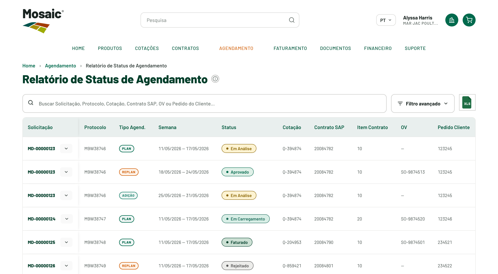

Jornada 5 de 5 · Agendamento · acompanhamento
Acompanhar Agendamentos
Acompanhar datas, volumes, status e histórico dos agendamentos.
4.865
protocolos acompanhados
1–3
cliques · novo fluxo
2.328
contratos/cotações
0
e-mails de status

1 2 3 4Cenário atual
Como acontece hoje — esforço, pessoas e sistemas.
Fluxo atual
- Informações dispersas
- Acompanhamento por e-mail
- Dependência do time interno
- Ausência de visão centralizada
- Dificuldade de consultar status, datas e volumes
Esforço & contexto
Interações: Trocas de e-mail com o time interno A validarTempo: Depende de terceiros
Pessoas
ClienteCustomer Service
Sistemas
E-mailScheduling
Repetição
A cada necessidade de status ou alteração.
Principais problemas
- Informações dispersas e acompanhamento por e-mail
- Dependência do time interno
- Ausência de visão centralizada de status/datas/volumes
Nova experiência
Como fica no Mosaic Direct 2.0.
Lista centralizada com pesquisa e filtros, status, datas, volumes, contrato/protocolo relacionado, histórico, próximas ações e — quando as regras permitirem — alteração ou cancelamento. Tags PLAN / REPLAN / ADIÇÃO e filtro por período.
O que muda em relação ao fluxo atual
- Substitui e-mails por consulta centralizada
- Alteração/cancelamento no portal, quando permitido
Benefícios
Para o cliente
- Acompanha o planejamento sem depender de e-mail
- Status, datas e volumes em um só lugar
Para a Mosaic
- Menos trocas de e-mail de status
- Dados de acompanhamento centralizados
Dados & pendências
Dados relacionados Confirmado
- Relacionado a 4.865 protocolos e 2.328 contratos/cotações
Pendências A validar
- Regras de alteração e cancelamento
- Nomenclatura oficial de status